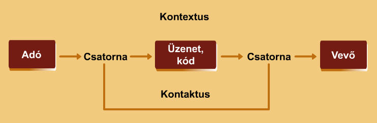

A kommunikációs folyamat tényezői és funkciói
A kommunikáció szó latin eredetű communis szóból ered, jelentése köz, közös.
A közlésfolyamat [kommunikáció] egy információ mozgásba lendítése, két fél közti szándékos és kölcsönös felhasználása.
Az emberi kommunikációt az jellemzi, hogy egymással kapcsolatban álló felek valamilyen jelrendszer segítségével kapcsolatba kerülnek, információkat adnak át, hatnak egymásra.
A kommunikáció elemei:
- Adó [közlő]: a kommunikáció kezdeményezője [információközlő]
- Vevő [befogadó]: a kommunikáció üzenetének befogadója
- Üzenet: a közlés tartalma, maga az információ
- Kód: az a jelrendszer, aminek segítségével az adó eljuttatja az üzenetet a vevőhöz; azaz a közlés eszköze és módja
- Csatorna: konkrét fizikai eszköz [pl.: levegő, telefonvonal, papír] amelyen keresztül az üzenet eljut a vevőhöz
- Kontextus: a valóságot jelenti, amely körülveszi a kommunikációs folyamat szereplőit, biztosítja pl. a közös nyelvi környezetet

A Jacobson-modell
A kommunikációs folyamat típusai
-
Irányultság szerint
- Egyirányú: az adó és vevő nincs egy térben/időben. Így a vevőnek nincs módja az adó szerepét betölteni, nem váltakoznak a szerepek. Pl.: költő-olvasó, hírbemondó-néző/hallgató
- Kétirányú nem egyidejű: hagyományos levél, hivatalos iratok [pl.: ellenőrzőkönyv]. A típuson belül megkülönböztethető egyenrangú és egyenlőtlen viszony
- Kétirányú egyidejű: beszélgetés, telefonbeszélgetés, stb.
-
Közvetlen vagy közvetett jelleg szerint
- Közvetlen: pl. két ember szemtől szembe történő közvetlen kommunikációs kapcsolata. A közvetlen kommunikációban minden érzékszerv részt vehet, a nyelvi és metakommunikációs elemek az üzenet sikeres átadását szolgálják
- Közvetett: A résztvevő felek között nincs személyes kapcsolat, technikai eszközök segítségével történik az információáramlás [pl. rádióhullám] vagy írásban [pl. levélpapír, elektronikus felület]
- Tömegkommunikáció: Az információ nagyobb létszámú embertömegekhez jut el valamilyen közlési csatornán keresztül. Általában nincs visszacsatolás, de lehetséges.
- Csoportkommunikáció: Jellemzője a kölcsönösség és a közvetlenség. Az információáramlás nem feltétlenül kétirányú és közvetlen.
Kommunikációs funkciók 1.
A kommunikációs folyamat során az információ mozgásba lendítésének szándéka alapján az alábbi kommunikációs funkciók különböztethetők meg:
- Tájékoztató [referenciális]: információátadás, vélemény-, gondolatközlés egy adott dologról
- Érzelemkifejtő [emotív]: az egyén [adó/közlő/Én], személyiség megnyilvánulása, érzéseinek, hangulatának, vágyainak a megfogalmazása
- Felszólító, felhívó [konatív]: a hallgató befolyásolására való törekvés, az adó a vevőt cselekvésre, magatartás-változtatásra, közös vélemény kialakítására, stb. akarja rávenni üzenettel. Lehet motiváló, bátorító, tiltó jellegű
- Kapcsolatfenntartó [fatikus]: megkönnyíti a befogadást, tisztázza a partnerek egymás közti viszonyát
- Értelmező, metanyelvi: magáról a nyelvről való kommunikáció [pl. pont ez a tétel feleletkor]
- Esztétikai, poétikai: szépirodalmi szövegre jellemző eszközök segítségével esztétikai élményt nyújtanak
Kommunikációs funkciók 2.
- Szocializáció: a közös tudásalap megszerzése a magán- és közélet szférában
- Vita és eszmecsere: a társadalmi konszenzus elősegítése, a társadalmi nyilvánosság fejlesztése
- Oktatás-nevelés: a szellemi, intellektuális fejlődés és személyiség formálódásának elősegítése
- Kulturális fejlődés: a közös emberi kultúrkincs megőrzésének, továbbadásának, fejlődésének kommunikációs funkciója
- Szórakoztatás: a kommunikáció szórakoztató funkciója az egyén alkotóerejének, készségének újjáalakítását biztosító kommunikációs funkció
- Integrálás: egyének, kisebb vagy nagyobb szociokulturális közösségek, társadalmi csoportok, nemzeti, etnikai közösségek vagy általában a nemzetek kölcsönös megismerésére és előítélet-mentes nézetek kialakítására irányuló kommunikációs funkció